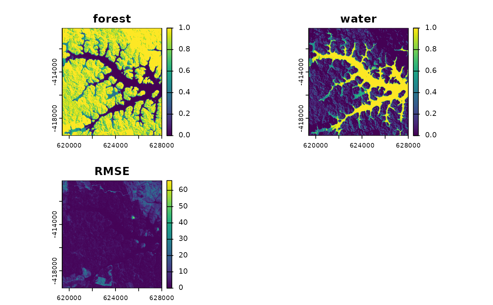

mesma performs a spectral mixture anlylsis (SMA) or multiple endmember spectral mixture analysis (MESMA) on a multiband raster image.
Usage
mesma(
img,
em,
method = "NNLS",
iterate = 400,
tolerance = 1e-08,
n_models = 5,
sum_to_one = TRUE,
...,
verbose
)Arguments
- img
SpatRaster. Remote sensing imagery (usually hyperspectral).
- em
Matrix or data.frame with spectral endmembers. Columns represent the spectral bands (i.e. columns correspond to number of bands in
img). Rows represent either a single endmember per class (SMA) or multiple endmembers per class (MESMA), if a column with nameclassis present, containing the class name each endmember belongs to, e.g. "water" or "land". See details below. Number of rows needs to be > 1.- method
Character. Select an unmixing method. Currently, only "NNLS" is implemented. Default is "NNLS".
NNLS:applies a non-negative least squares (NNLS) regression which is using a sequential coordinate-wise algorithm (SCA) based on Franc et al. (2005).
- iterate
Integer. Set maximum iteration per pixel. Processing time could increase the more iterations are made possible. Default is 400.
- tolerance
Numeric. Tolerance limit representing a nearly zero minimal number. Default is 1e-8.
- n_models
Logical. Only applies if
emcontains columnclass. Defines how many endmember combinations should be picked. Maximum is the minimum number of endmembers of a class. Defaults to 5.- sum_to_one
Logical. Defines whether a sum-to-one constraint should be applied so that probabilities of endmember classes sum to one (a constraint not covered by NNLS) to be interpretable as fractions. Defaults to
TRUE. To get actual NNLS results, change toFALSE.- ...
further arguments passed to writeRaster.
- verbose
Logical. Prints progress messages during execution.
Value
SpatRaster. The object will contain one band per class, with each value representing the estimated probability of the respective endmember class per pixel, and an RMSE band. If sum_to_one is TRUE (default), values of the class bands can be interpreted as fractions per endmember class (0 to 1).
Details
Argument em determines whether an SMA (each row representing a single endmember per class) or a MESMA (multiple endmembers per class differentiate using the class column) is computed.
If multiple endmembers per class are provided, mesma will compute a number of SMA (determined by argument n_models) for multiple endmember combinations drawn from em and will select the best fit per pixel based on the lowest RMSE, based on the MESMA approach proposed by Roberts et al. (1998).
Note
Depending on iterate and tolerance settings and the selected endmembers, the sum of estimated probabilities per pixel varies around 1. NNLS does not account for a sum-to-one constraint. Use sum_to_one to sum to one post-NNLS.
To achieve best results, it is recommended to adjust n_models in accordance to the number of endemembers per class provided through em so that as many endmember combinations as possible (with each endmember being used once) are computed. The more models are being calculated, the more processing and memory recourses are needed.
References
Franc, V., Hlaváč, V., & Navara, M. (2005). Sequential coordinate-wise algorithm for the non-negative least squares problem. In: International Conference on Computer Analysis of Images and Patterns (pp. 407-414). Berlin, Heidelberg.
Roberts, D. A., Gardner, M., Church, R., Ustin, S., Scheer, G., & Green, R. O. (1998). Mapping chaparral in the Santa Monica Mountains using multiple endmember spectral mixture models. Remote sensing of environment, 65(3), 267-279.
Examples
library(RStoolbox)
library(terra)
# to perform a SMA, use a single endmember per class, row by row:
em <- data.frame(lsat[c(5294, 47916)])
rownames(em) <- c("forest", "water")
# umix the lsat image
probs <- mesma(img = lsat, em = em)
plot(probs)

# to perform a MESMA, use multiple endmembers per class, differntiating them
# by a column named 'class':
em <- rbind(
data.frame(lsat[c(4155, 17018, 53134, 69487, 83704)], class = "forest"),
data.frame(lsat[c(22742, 25946, 38617, 59632, 67313)], class = "water")
)
# unmix the lsat image
probs <- mesma(img = lsat, em = em)
plot(probs)
 # MESMA can also be performed on more than two endmember classes:
em <- rbind(
data.frame(lsat[c(4155, 17018, 53134, 69487, 83704)], class = "forest"),
data.frame(lsat[c(22742, 25946, 38617, 59632, 67313)], class = "water"),
data.frame(lsat[c(4330, 1762, 1278, 1357, 17414)], class = "shortgrown")
)
# unmix the lsat image
probs <- mesma(img = lsat, em = em)
plot(probs)
# MESMA can also be performed on more than two endmember classes:
em <- rbind(
data.frame(lsat[c(4155, 17018, 53134, 69487, 83704)], class = "forest"),
data.frame(lsat[c(22742, 25946, 38617, 59632, 67313)], class = "water"),
data.frame(lsat[c(4330, 1762, 1278, 1357, 17414)], class = "shortgrown")
)
# unmix the lsat image
probs <- mesma(img = lsat, em = em)
plot(probs)